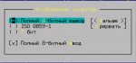
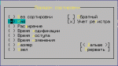
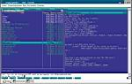
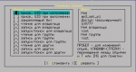
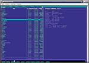
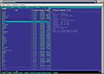
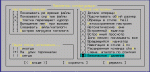

Всех пингвинов командир
Какие программы предпочитают юзеры при работе с
файлами в Windows в качестве альтернативы стандартному Explorer’у? Кто-то
ответит: «Нортон», иной скажет: «Волков»; мне, например, очень нравится
Far. И не потому, что Explorer совсем такой уж плохой, просто в некоторых
ситуациях, например, при копировании файлов или перемещению по каталогам,
он несколько неудобен (прим. литредактора: Забавно: «в некоторых
ситуациях». А на… пардон, зачем обычно нужен файловый менеджер, как не для
копирования файлов и перемещения по каталогам???) Аналогичная ситуация
наблюдается и в Linux. Хотя и существует большое количество различных
файловых менеджеров, большинство пользователей продолжают использовать в
своей работе mc (Midnight Commander). Помимо удобства и
наглядности, их подкупают его низкие требования к системным ресурсам. Не
менее важен и тот факт, что данная программа входит практически во все
дистрибутивы, а при возникновении критической ситуации, когда X-Window не
загружается, Midnight Commander в связке с текстовым редактором vi
остается последним средством, чтобы все поправить. Данная статья
поможет разобраться, что к чему при использовании mc. Пользователи,
которые до этого работали в ДОС или часто использовали Far в своей работе,
многое будет не внове, хотя программа располагает и некоторыми
особенностями, присущими среде Linux. Для краткости будем считать, что
Midnight Commander установлен и его не надо искать в Интернете (с чего
начинают свою работу поклонники демончика с трехзубым fork'oм —
FreeBSD).
Запускается программа путем набора mc в командной строке. Если ничего
не произошло, по команде find / -name 'mc' найдите каталог, куда
установлена софтина (как правило, программа находится в /usr/bin/mc).
После запуска Midnight Commander’а возникают две панели сине-белого цвета,
вверху которых расположена строка меню, а внизу — подсказка к горячим
клавишам. Если чего-то из вышеописанного нет или, наоборот, по вашему
мнению что-то является лишним, зайдите в Настройка (горячая клавиша
F9) > Внешний вид и уберите/добавьте то, что считаете
нужным/ненужным. Например, на небольших мониторах можно выключить
клавиши-подсказки — так вы даже быстрее их запомните. В любом случае,
в пункте меню Файл находятся все необходимые команды. При
правильной локализации системы все надписи, а также вводимый и выводимый
текст, отображаются в русской кодировке, если же это не так,
проверьте, чтобы были установлены Полный 8-битный ввод и Полный
8-битный вывод в подпункте Отображение символов
(Рис. 1). Каждая панель состоит из списков файлов каталога, в
котором вы находитесь, и строки министатуса (которая, впрочем, тоже
отключается). Формат вывода информации о файлах можно изменить в пункте
Правая (левая) панель >  Формат списка. Существует четыре варианта представления:
стандартный (full) — отображается только имя, размер и
время последнего изменения;
укороченный (brief) — только имя (но зато в две колонки и,
соответственно, вдвое больше файлов);
расширенный (long) — панель занимает весь экран, доступна
также информация о владельце и группе, в том числе права доступа и
количество жестких ссылок на файл (ls -l);
определенный пользователем (user) — пользователь сам
определяет формат вывода;
Чтобы не пересказывать то, что написано во встроенной справочной
системе, скажу, что я пользуюсь таким форматом:
Здесь: half — половина экрана, type — отображает тип файла
(/ — каталог, @ — ссылки, * — исполняемые файлы,
и т.д.), name — имя файла, owner — владелец, mode —
права доступа в числовой форме (perm — для вывода в буквенной),
size — размер файла, знак | — разделитель. Здесь же аналогичным
образом можно задать и свой собственный формат для строки мини-статуса.
Отображение списка файлов может производиться в соответствии с одним из
следующих правил сортировки: без сортировки, по имени, по расширению, по
времени модификации, по времени доступа, по времени изменения, по размеру
и по номеру узла (inode) (Рис. 2). При этом можно
выбрать обратный порядок сортировки (reverse). Все это можно
изменить в подпункте Порядок сортировки соответствующей панели. А в
пункте меню Фильтр, можно задать шаблон для вывода файлов, если вы
хотите чтобы отображались файлы какого то определенного типа. Одну панель
можно настроить для вывода интересующей вас информации.
 
Например, при выборе режима Быстрый просмотр (Quick View)
выводится содержимое файла (Рис. 3), в режиме Дерево
(Tree) можно увидеть местоположение файла в контексте структуры
каталогов, наконец, в режиме Информация в другой панели выводится
все об интересующем вас файле (Рис. 5-6). В режимах Сетевое
соединение и FTP-соединение можно работать с файлами на
удаленных компьютерах точно так же, как с локальными. Есть еще вверху на
панели три кнопки — <, v и >,
предназначенные для перемещения по дереву каталогов с помощью мыши (по
нажатию v высветится история перемещения).
Кстати, если у вас запущен сервер gpm, то проблем с мышью быть
не должно, все равно в каком режиме вы работаете — в консоли, в
эмуляторе терминала xterm или вообще на удаленном компьютере. Для
того чтобы вырезать\вставить текст с помощью мыши необходимо при этом
удерживать клавишу Ctrl (правда, в эмуляторе терминала эта фича не
работает).
Теперь что касается копирования, перемещения и удаления файлов. Для
того чтобы выделить файл, нужно щелкнуть по нему правой кнопкой мыши;
снять выделение можно, проделав эту операцию повторно. С помощью
клавиатуры все это можно проделать нажатием Ctrl+t либо Insert , а группу
файлов можно выделить, нажав Доп + (снять выделение —
Доп -). Операция Инвертировать отметку позволяет снять
выделение с файлов и выделить остальные. А Снять отметку (\)
позволяет снять подсветку с уже выделенного файла. Хочу также обратить
ваше внимание, что при выборе группы файлов через Отметить группу
можно воспользоваться регулярными выражениями. При этом знак * означает
ноль или любое количество символов, знак ? — любой одиночный символ,
а чтобы указать на группу знаков, один из которых должен присутствовать в
искомом файле, необходимо заключить эти знаки в квадратные скобки.
Например, следующий шаблон выведет все файлы от test1.gz до test9.gz:
test[1-9].gz. Кроме того, выделив группу файлов, можно также установить
права доступа для всех сразу, использовав команду chmod, а также изменить
владельца файла или группу, к которой принадлежат данные файлы (chown и
chgrp соответственно). Все это доступно через подпункты 
Права доступа (Ctrl+x; c) (Рис. 4) и
Владелец/группа (Ctrl+x; o) меню Файл. Здесь же, в подпункте
Права (расширенные), можно редактировать все сразу. Естественно, вы
должны помнить, что если установить нужные права на интересующий вас
каталог, то это не значит, что все файлы, находящиеся в нем, будут иметь
такие же права — для этого нужно заходить в каждый каталог и
устанавливать для файлов права доступа отдельно или воспользоваться
командой chmod, chown, chgrp с флагом -R.
Для выделенных файлов можно установить жесткую (Ctrl+x; l) либо
символическую ссылку (Ctrl+x; s). Так как в этом вопросе постоянно
путаются, то внесу необходимую ясность. Сначала о жестких ссылках. В
Linux, как и во всех Unix'ax, все файлы (и каталоги, кстати, тоже) имеют
свой номер, для каждого создается узел (inode), в котором хранится вся
служебная информация, состоящая примерно из 13 пунктов. Лишь для
имени в этом самом inode места не нашлось, поэтому каждый узел связывается
с именем с помощью ссылки в виде имя файла — номер узла. При
обращении к файлу по связке название-узел отыскивается нужный inode, после
чего на название система больше не обращает абсолютно никакого внимания.
Поэтому в Linux можно, запустив программу, тут же переименовать файл или
удалить его (Windows вам этого не позволит сделать, сославшись на то, что
файл занят приложением). Это и называется жесткой ссылкой. Еще один
интересный момент: ведь никто не мешает создать две и более жестких ссылок
на один и тот же узел. Этот трюк широко распространен. Посмотрите
Рис. 5-6 и сравните характеристики файлов gzip gunzip. Как
видите, такие пункты как положение на диске, размер и т.д. одинаковы,
отличается только название — то есть, по сути мы запускаем одну и ту
же программу. Как же, спросите вы, ведь эти две программы предназначены
для разных целей. А все очень просто (кто программировал для консоли, тот
поймет сразу): одним из параметров, передаваемых при запуске программы,
является название — отсюда программа и узнает, что же она должна
собственно делать. Кстати, в Unix'ax программами удаления убивается не
файл, а ссылка на узел — файл удаляется автоматически, когда на него
нет ни одной ссылки и он не используется ни одной программой. Единственное
ограничение на использование жестких ссылок — все они должны
находится на одном диске (связи не могут пересекать границ устройств).
Символическая ссылка — это особый вид файла, в котором
содержится информация о расположении исходного файла, находящегося на
любом диске или компьютере. При удалении исходного файла символическая
ссылка становится бесполезной, но можно создавать символические ссылки на
несуществующий или временно недоступный файл. В качестве аналога
символической ссылки могу привести ярлыки в Windows.
 
При копировании, перемещении и переименовании файлов можно изменять их
имена. Для этого необходимо задать маску — как для исходных,
так и для выходных файлов. Эта функция бывает полезна, когда файлы с таким
именем в конечном каталоге уже есть или могут быть, либо когда вы хотите
сменить расширение (.MP3 на .mp3, .jepg на .jpg, .tar.gz на .tgz) или
добавить префикс .old или .bak к названию файла.
Например, при указании маски источника *.tar.gz и маски приемника *.tgz
все файлы с расширением .tar.gz будут переименованы в .tgz. В одной из
конференций я нашел способ сделать это с помощью команды find:
Как видите, для каждого файла вызывается командный интерпретатор —
скорость при этом оставляет желать лучшего, юзабельность тем более. А с
помощью mc все наглядно и, самое главное, быстро.
Если воспользоваться в маске приемника \u или \l, следующий символ
имени будет преобразован к верхнему (в первом случае) или к нижнему (во
втором) регистру. При использовании знаков \U или \L все последующие
символы будут преобразованы к соответствующему регистру. Подробнее
смотрите в инструкциях к утилитам grep, sed, awk и
справке по программированию на shell. Есть еще несколько опций, которые
влияют на операции копирования и перемещения. Так, опция Разыменовывать
ссылки (Follow links) определяет, будут ли при копировании жестких и
символических ссылок создаваться ссылки, или будут копироваться сами
файлы. А со включенной опцией Внутрь каталога, если есть (Dive
into subdirs) при копировании каталога в конечном каталоге будет
создаваться подкаталог с именем копируемого, независимо от того, есть ли
он там или нет (если есть, то подкаталог создается на уровень ниже). При
включении опции Сохранять атрибуты (Preserve attributes) все
копируемые/перемещаемые файлы сохраняют свои начальные атрибуты (права
доступа, временные параметры), при выключении используется значение,
определяемое текущим значением umask. Чтобы при удалении файла у
вас запрашивалось подтверждение, проверьте, установлена ли опция
Безопасное  удаление в Настройки > Параметры
(Рис. 7).
Первым моим приятным удивлением в Linux'e было автодополнение в
bash, что сильно облегчает жизнь и позволяет быстро найти нужный
файл и набрать команду. То ли дело ДОС, где при запуске программы
необходимо помнить полностью путь к ней! Так вот, в mc тоже работает
автодополнение команд по Alt+Tab, но есть и другая возможность быстро
найти нужный файл. Для этого нажмите Alt+S или Ctrl+S, и по введенным вами
буквам курсор переместится к нужному файлу, а если у вас включена строка
мини-статуса, то там также будет отображаться результат. Раз мы уже
заговорили про поиск файлов, то для этого есть пункт меню
Команда > Поиск файла, где можно произвести поиск по
названию (можно применять шаблон для egrep) или по тексту,
содержащемуся в искомом файле. Для того чтобы не искать по все каталогам,
можно указать, в каких именно производить поиск. Каталоги, которые нужно
пропустить, можно указать в файле ~/.mc/ini, разделяя их двоеточиями.
Пример:
Напомню только, что точка при указании каталога означает текущий
каталог, а ~ (тильда) — домашний.
Пункт Критерий панелизации (Ctrl+X) применяется в том случае,
если вы хотите вывести результат выполнения какой либо команды на текущую
панель (что-то типа встроенного терминала). Подменю История команд
выводит окно со списком ранее набранных команд; можно выделить необходимую
с помощью мыши или клавиш перемещения и скопировать в командную строку для
редактирования и выполнения. А в подменю Справочник каталогов
(Ctrl+\) можно занести наиболее часто используемые в работе
подкаталоги, для быстрой навигации по дереву каталогов. Пункта Фоновые
задания позволяет, соответственно, управлять фоновыми заданиями,
запущенными из mc. С помощью mc можно запускать программу по нажатию
Enter; для того чтобы связать расширение файла с программой, которая будет
выполняться по нажатию на ней, существует файл ~/.mc/bindings — его
можно вызвать для редактирования через подпункт меню Файл
расширений. Файл меню позволяет отредактировать
пользовательское меню (вызываемое по F2); все внесенные изменения
сохраняются в файле ~/.mc/menu. Это обычный текстовый файл —
естественно, туда можно добавить и свои пункты. Для обращения к файлам и
каталогам доступны следующие переменные:
%f — имя файла, над которым расположен указатель;
%d — текущий каталог;
%F — имя текущего файл в противоположной панели;
%D — имя текущего каталога в противоположной панели;
%t — выделенные файлы в текущей панели;
%T — выделенные файлы в противоположной панели;
%{текст} — в том месте, где употреблена эта конструкция, появится
приглашение ввести текст, который будет подставлен в скрипт;
%s или %S — выделенные файлы
Строка начинающаяся с любого знака кроме пробела, считается названием
подпункта меню. Первый символ может использоваться как горячая клавиша.
Остальные строки, предваряемые пробелом или знаком табуляции, считаются
скриптом, при обращении к которому происходит подстановка переменных,
копирование всего этого во временный файл, который и исполняется.
Например, следующий скрипт устанавливает rpm-пакет (под root), на
который указывает курсор:
А теперь в каталоге с rpm-пакетами войдите в пользовательское меню
через клавишу F2 и нажмите R — пакет, над которым располагался
курсор, будет установлен.
А следующий скрипт запускает в фоне все выделенные музыкальные файлы
(щелчок правой кнопкой по нужным файлам, F2 и потом S — что может
быть проще):
Таким образом можно существенно облегчить себе жизнь и не набирать в
командной строке по сто раз на день одно и то же. А запустив какой-нибудь
оконный менеджер полегче типа flwm или failsafe (это для
того чтобы можно было запускать приложения, написанные под X-Window) и
создав необходимые пункты меню, можно на слабых компьютерах работать не
менее комфортно, чем в КДЕ. Я, например, использую меню еще и для запуска
различных текстовых редакторов — писать программы мне нравится в
одном, HTML править в другом, подготавливать документы в третьем… Это,
кстати, еще один способ сделать с файлами все что вы хотите —
например, для переименования с изменением атрибутов или копирования
архивов с одновременной их распаковкой. Вот с помощью такой конструкции
можно сделать символические ссылки в другой панели на выделенные файлы.
Переменной i при каждой итерации цикла передается имя файла.
Конструкция %d/$i представлляет собой полный путь к файлу в текущем
каталоге, %D/$i — в противоположном.
Очень часто в конференциях спрашивают: «А не переделать ли mc, чтобы
удобно было делать то-то и то-то». Вот вам способ, творите.
Есть еще подпункт Восстановление файлов, с помощью которого
можно попытаться восстановить файл системы ext2fs, но с файлами я
прощаюсь раз и навсегда, поэтому, честно говоря, им ни разу не
пользовался.
С помощью встроенного редактора можно просматривать или редактировать
текстовые файлы (а еще архивы и rpm-пакеты) (горячая клавиша F3 и F4
соответственно). Если в файле ~/.mc/ini установлены в 1 переменные
use_internal_view и use_internal_edit (как правило, по умолчанию они
установлены), встроенный редактор можно вызвать, просто набрав в командной
строке mcedit, после чего откроется пустой файл. В нем можно редактировать
как обычные AСSII-файлы, так и двоичные, не боясь повреждения данных.
Можно сделать так, чтобы по умолчанию запускался какой-либо другой
редактор или просмотрщик. Для этого в Настройки > Конфигурация
уберите галочки с пунктов Встроенный просмотр и Встроенный
редактор. Теперь для просмотра будет запускаться программа, указанная
в переменной окружения pager, а если она не установлена, то будет
выполнена команда view. Аналогично используется переменная editor и
редактор vi. Но по-моему, встроенные средства тоже достаточно
хороши, а если будет в том необходимость, то для запуска необходимого
редактора я воспользуюсь описанным раннее способом.
Вот вкратце и все, что я хотел расказать об Midnight Commander’е. Могу
сказать, что даже таким вопросам, как работа встроенного редактора и
различия между работой в консольном режиме и в эмуляторе терминала, можно
посвятить еще несколько страниц, но рамки журнала, как вы понимаете, не
позволяют это сделать. Самое интересное, что в первые месяцы моей работы в
Linux я даже не подозревал о том, что у меня есть такая удобная программа.
Я набрел на нее случайно и теперь отношу к разряду программ первой
необходимости. Естественно, как принято во многих программах, при нажатии
клавиши F1 будет вызвана справка, где вы можете найти необходимую
информацию. Для тех, кто не считает английский язык своим родным или
просто предпочитает получать справку на знакомом языке, на сайте
В. А. Костромина по адресу http://linux-ve.chat.ru/kos/mc.hlp.bz2 находится файл
подсказки, переведенный на русский язык — разархивируйте его и
скопируйте в каталог /usr/lib/mc. Кстати, то о книгах. Вышло в свет
творение упомянутого Костромина «Linux для пользователя» — я
думаю, оно будет особенно полезно начинающему пользователю. Здесь вы
найдете необходимые советы по настройке и использованию системы. Итак, мы
сегодня продвинулись еще на шаг в изучении Linux.
Сергей
ЯРЕМЧУК
Мой Компьютер Weekly
|